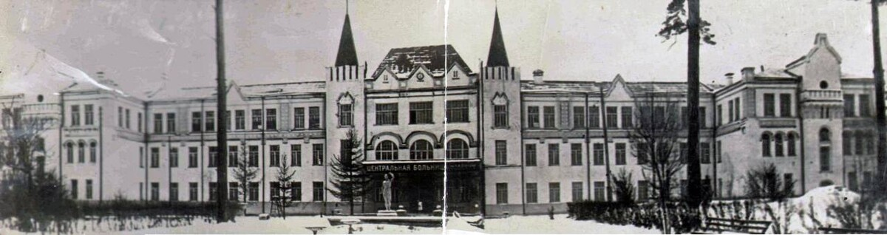
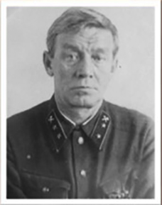
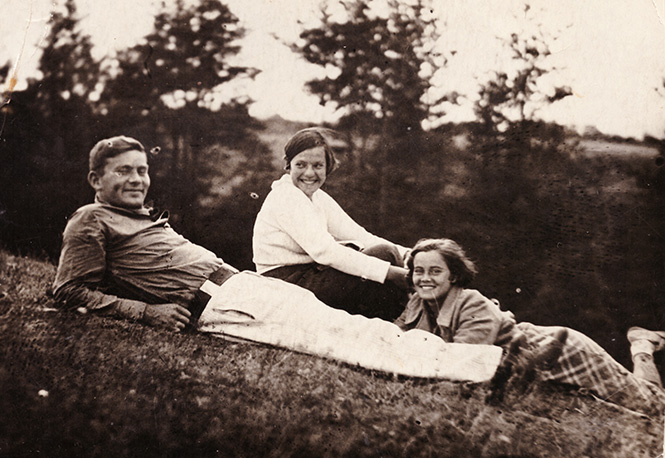
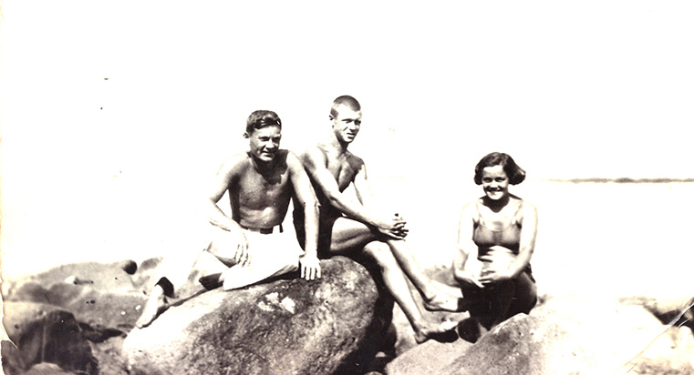
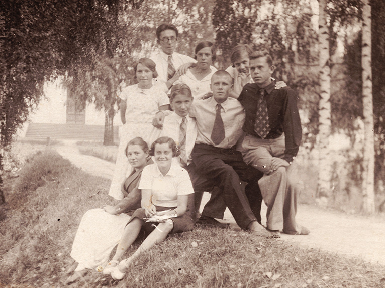
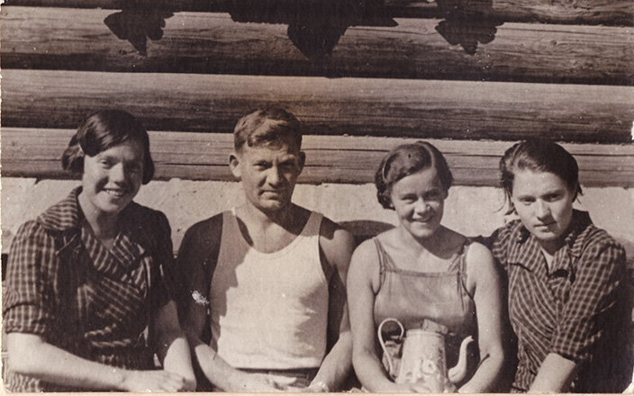

В те январские дни 1924 года, когда Дмитрий Аверьянович Осин был в очередной командировке, под Москвой в усадьбе Горки на руках (в прямом смысле) молодого тогда фельдшера Владимира Рукавишникова умирал "пациент №1" - Владимир Ильич Ленин. Позже В.Рукавишников окончил медицинский институт и много лет проработал врачом в московской больнице министерства путей сообщения - ныне ЦКБ №4 имени Н.А.Семашко ОАО "РЖД".

Больница им. Н.А.Семашко, г.Москва

В.А.Рукавишников, 1941г.
Двое его детей, сын Игорь и дочь Мария, также получили высшее образование, причем дочь стала, как и отец, хирургом. А во времена студенчества детей, во второй половине 1930-х гг. семья Рукавишниковых выезжала на летний отдых из Москвы - по Волге, останавливаясь в разных маленьких городах. Больше всего им понравился Пучеж, где они гостили несколько сезонов подряд. Игорь и Мария быстро подружились со своими сверстниками-пучежанами, среди которых были и А.Осин, и сестры Смирновы... На немногих сохранившихся фото они весело проводят время на природе, наслаждаясь летними каникулами.

Рукавишниковы, М.Смирнова. г.Пучеж, 1936г.

Рукавишниковы, А.Малышев. г.Пучеж, 1936г.

М.Рукавишникова с пучежскими друзьями. 1936г.

Рукавишниковы и сестры Смирновы. г.Пучеж, 1940г.
И так вышло, что раненый под Сталинградом Александр, едва доехавший до Москвы - зимой, привязанный к поручням на подножке вагона - попал на лечение в тот самый госпиталь к молодому уже врачу М.Рукавишниковой (после замужества - Леменовской). Лечение было долгим, и молодой офицер по-человечески сблизился со знакомой ему семьёй врачей, бывал у них дома. Уже после войны общение продолжилось - в том числе у следующих поколений. Мария Владимировна прожила долгую жизнь, достойно продолжая дело отца. Воспитала двух сыновей и троих внуков, за работу в год войны была награждена медалями "За оборону Москвы" и "За победу над Германией". Бывая в Москве мы, костромичи, по возможности заглядывали к Леменовским в гости. Вели активную переписку, постоянно были на связи. Подобные отношения ныне редки даже между родственниками.